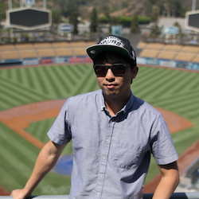

Wei-Sheng (Jason) Lai
Software Engineer

I am a software engineer at Google, working on mobile computational photography. I received my Ph.D. from the EECS department at University of California, Merced in 2019, under the advisement of Prof. Ming-Hsuan Yang. Before coming to UC Merced in 2015, I obtained my B.S. and M.S. degrees from the EE department at National Taiwan University in 2012 and 2014, respectively.
My research interests include Computer Vision, Computational Photography and Machine Learning. I am lucky to have opportunities to work with Jia-Bin Huang (Virginia Tech), YiChang Shih (Google), Chia-Kai Liang (Google), Deqing Sun (Nvidia Research), Jinwei Gu (Nvidia Research), Orazio Gallo (Nvidia Research), Jan Kautz (Nvidia Research), Ersin Yumer (Adobe Research), Oliver Wang (Adobe Research), Eli Shechtman (Adobe Research), Neel Joshi (Microsoft Research), Sing Bing Kang (Microsoft Research), Yen-Yu Lin (Academia Sinica), and Yung-Yu Chuang (National Taiwan University).
Software Engineer
Aug. 2019 - Present
Student Researcher
Dec. 2018 - May 2019
Research intern
May 2018 - Nov. 2018
Sep. 2017 - Nov. 2017
Research intern
May 2017 - Aug. 2017
Research intern
May 2016 - Aug. 2016
Ph.D.
Aug. 2015 - Jul. 2019
Research assistant
Aug. 2014 - Jul. 2015
B.S., M.S.
Sep. 2008 - Jul. 2015